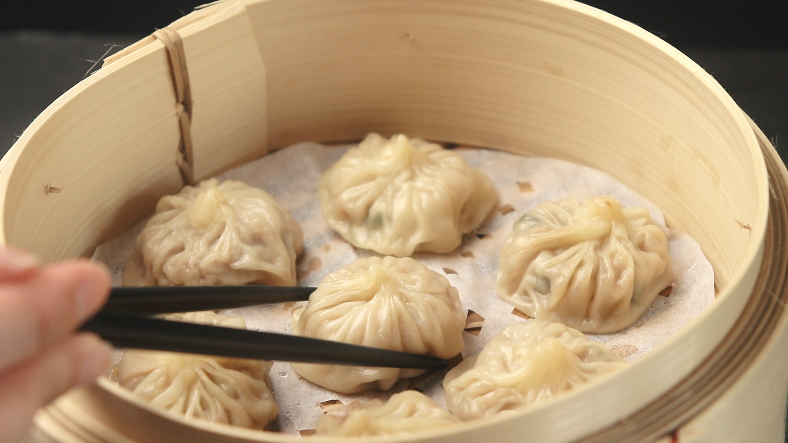
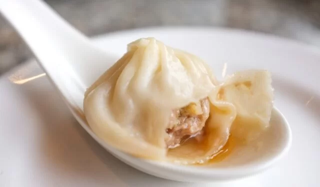
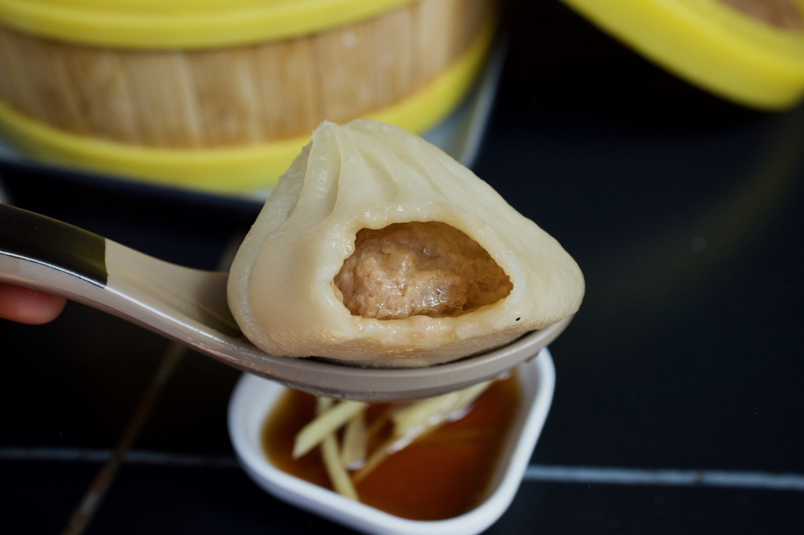
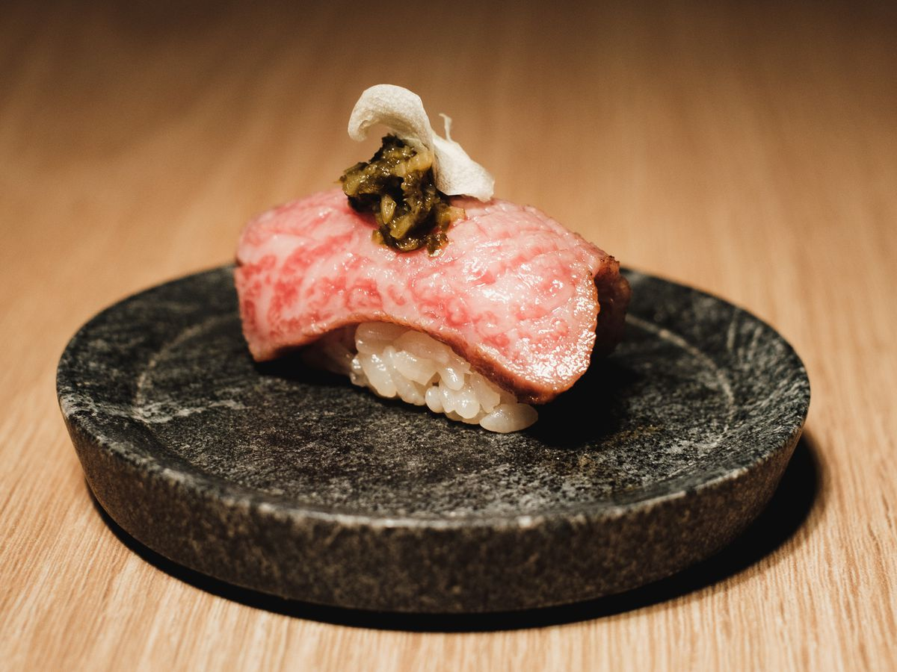
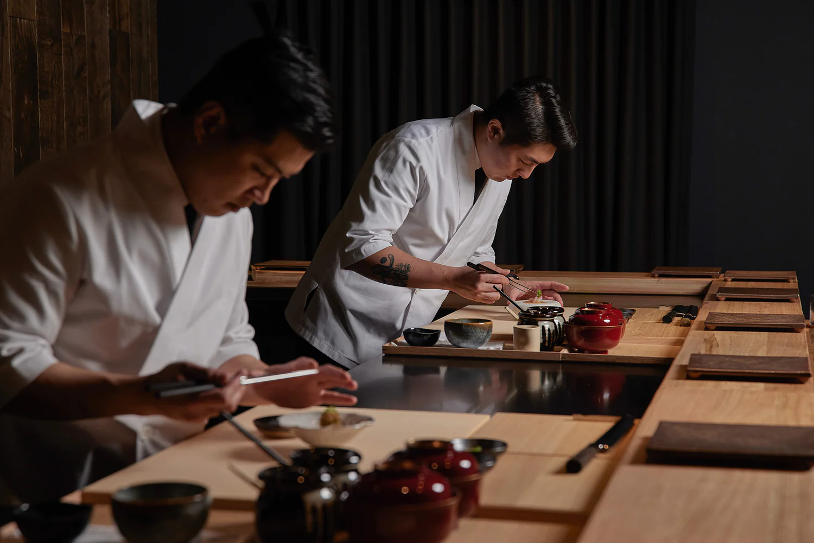
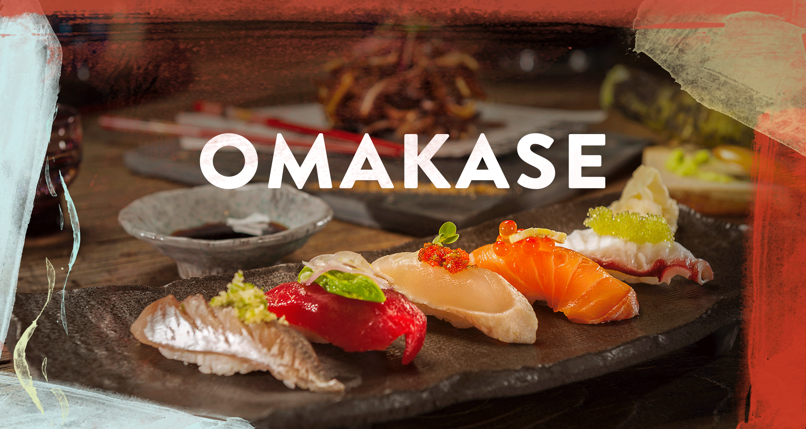
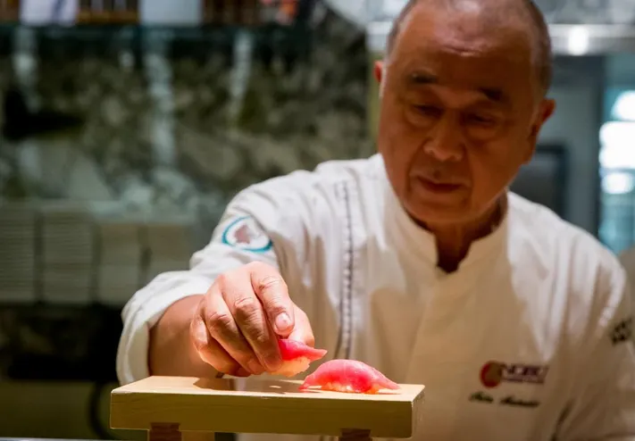
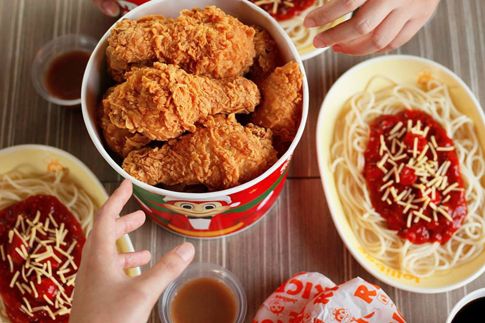
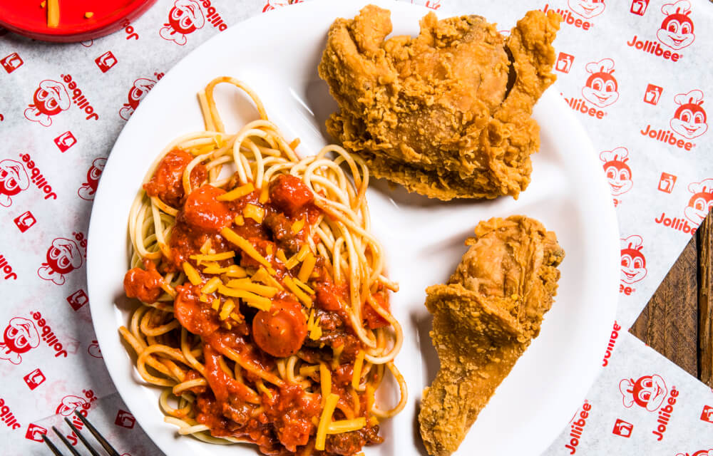

Recipe
Xiaolongbao
Xiaolongbao aka soup dumplings, is a type of Chinese steamed bun from Jiangsu province, especially associated with Wuxi and Shanghai. It is traditionally prepared in xiaolong, which give them their name. Xiaolongbao are often referred to as a kind of "dumpling", but should not be confused with British or American-style dumplings nor with Chinese jiaozi.
As a kind of dim sum, they are sometimes served in bamboo steamers, which can be stacked into towers to save space while they are being served. The buns are served hot in the bamboo steamer and on a base of paper, which is often soaked with the juices released from the dumplings during steaming. They are typically served with a dipping sauce of black vinegar and/or Shanghainese Zhenjiang vinegar with ginger slivers.
Omakase
Omakase is a Japanese phrase that means "I'll leave it up to you". It's used at Japanese restaurants to leave the selection to the chef. The chef will generally present a series of plates, beginning with the lightest fare and proceeding to the heaviest, richest dishes. The phrase is not exclusive to service of raw fish with rice, and can incorporate grilling, simmering, or other cooking techniques as well.
Omakase is most often ordered at the sushi counter of a restaurant, where the chef will prepare a series of plates for the customers to try. The chef will usually present a series of plates, beginning with the lightest fare and proceeding to the heaviest, richest dishes. The phrase is not exclusive to service of raw fish with rice, and can incorporate grilling, simmering, or other cooking techniques as well.
Photo Gallery
 Jolibee
Jollibee is a Filipino multinational chain of fast food restaurants owned by Jollibee Foods Corporation. As of April 2018, JFC had a total of about 1,200 Jollibee outlets worldwide; with presence in Southeast Asia, the Middle East, East Asia, North America, and Europe.
Jollibee started as a small ice cream parlor before expanding its menu to include fast-food items such as burgers, spaghetti, fried chicken, and rice meals, which quickly became a hit among locals. Jollibee's signature dish, Chickenjoy, a crispy and juicy fried chicken, along with its sweet-style Jolly Spaghetti, embodies the fusion of Western fast-food style with the local flavors cherished by Filipinos. Over the years, Jollibee has grown into a major international brand, with hundreds of stores across the Philippines and overseas, spreading Filipino dining culture globally and serving as a taste of home for many expatriates. The brand's success is not just due to its menu, but also to its emphasis on family values, cheerful service, and a warm, welcoming atmosphere, making it a beloved household name.